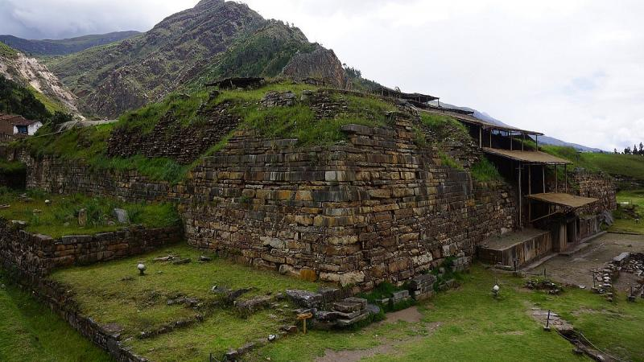

Machu Picchu es una ciudadela inca ubicada en las alturas de las montañas de los Andes en Perú, sobre el valle del río Urubamba. Se construyó en el siglo XV y luego fue abandonada, y es famosa por sus sofisticadas paredes de piedra seca que combinan enormes bloques sin el uso de un mortero, los edificios fascinantes que se relacionan con las alineaciones astronómicas y sus vistas panorámicas. El uso exacto que tuvo sigue siendo un misterio.
Chavín de Huántar es un sitio arqueológico (o monumento arqueológico) ubicado en el distrito de Chavín de Huántar, provincia de Huari, departamento de Áncash, en el Perú. Declarado como Patrimonio de la Humanidad en 1985. Se ubica a 462 km al noroeste de Lima y a 86 km de Huaraz, a una elevación de 3177 m s. n. m., en la Sierra Oriental de Áncash al este de la Cordillera Blanca. El complejo se ubica en la confluencia de los ríos Huacheksa y Mosna, en la cuenca alta del río Marañón, que fue un punto de paso preinca desde la costa hacia la selva, lo que propició su crecimiento e importancia en la recolección de insumos y tránsito de bienes.

El lago Titicaca se extiende por la frontera entre Perú y Bolivia en la cordillera de los Andes y es uno de los lagos más grandes de Sudamérica y el cuerpo de agua navegable más alto del mundo. Se dice que es la cuna de los incas y cuenta con varias ruinas. Sus aguas son conocidas por ser tranquilas y dar un reflejo brillante. En sus alrededores, se ubica la Reserva Nacional del Titicaca que alberga especies acuáticas poco comunes, como las ranas gigantes.

Las Líneas de Nazca, en el sur de Perú, son un grupo de geoglifos precolombinos que se extienden en las arenas del desierto. Abarcan un área de casi 1,000 kilómetros cuadrados y hay alrededor de 300 figuras distintas, que incluyen animales y plantas. Están compuestos por más de 10,000 líneas, algunas de estas de 30 metros de ancho y más de 9 kilómetros de largo. Es más fácil ver las figuras desde el aire o desde montañas cercanas.
El Cañón del Colca se encuentra en el valle de un río del sur de Perú y es famoso por ser uno de los más profundos del mundo. Es un destino famoso para el senderismo. Es un hábitat del cóndor Andino gigante, que se observa desde miradores como la Cruz del Cóndor. El paisaje del cañón abarca un valle verde y aldeas remotas tradicionales con agricultura en terrazas que precedió a los Incas. El río Colca es popular para el descenso en balsas.